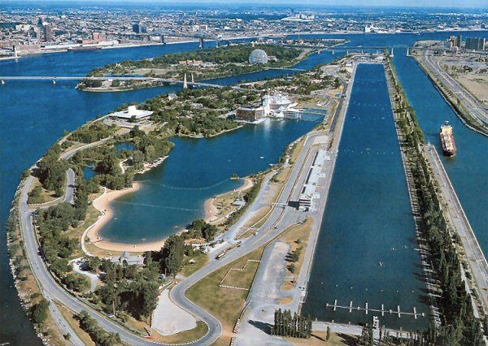

Circuit Gilles Villeneuve

Technical Details
Location: Montréal, Canada
Length: 4.361 km
Laps: 70
First GP: 1978
Curiosities
The Circuit Gilles Villeneuve is a semi-street circuit located on Île Notre-Dame in Montreal. Named after Canadian legend Gilles Villeneuve, it is known for unpredictable races and close barriers. The track often produces high drama, including frequent safety cars and surprise winners. Its famous “Wall of Champions” has caught out many world champions over the years.